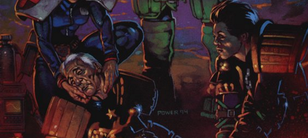

Judge Hilda Margaret McGruder was head of the SJS before being made Chief Judge following the Apocalypse War, and later taking the long walk into the Cursed Earth following the disastrous Warlord incursion into Mega-City One that caused the death of Judge Omar, then head of Psi-Division.
During Necropolis, she returned to the city with Dredd and became Chief Judge for a second term, facing difficulties around her promotion of the nascent Mechanismo program. She was succeeded by Judge Hadrian Volt.
Art by Dermot Power
| Story Title | Parts | Pages | w indicates a wraparound coverCovers | Year(s) | Issues | Writer | Artist | Colourist | Letterer |
|---|---|---|---|---|---|---|---|---|---|
From Judge DreddBlock War | 1 | 6 | Brian Bolland 1 | 1980 | 182 | Kelvin Gosnell Alan Grantvarious | Brian Bolland | <-- pp1-2, [b&w] | Tom Frame |
From Judge DreddKnock on the Door | 1 | 7 | 0 | 1981 | 195 | Alan Grant John Wagnervarious | Ian Gibson | [b&w] | Tom Frame |
From Judge DreddAny Confessions | 1 | 7 | Ian Gibson 1 | 1981 | 201 | Alan Grant John Wagnervarious | Ian Gibson | <-- pp1-2, [b&w] | Tom Frame |
From Judge DreddThe Apocalypse War | 25 | 153 | 245: Carlos Ezquerra 250: Carlos Ezquerra 254: Carlos Ezquerra 256: Carlos Ezquerra 262: Robin Smith 265: Robin Smith 267: Brett Ewins 7 | 1982 | 245-267, 269-270 | Alan Grant John Wagnervarious | Carlos Ezquerra | <-- 46pp, [b&w] | Steve Potter: 1‑4 Tom Frame: 5‑25 various |
From Judge DreddDestiny's Angels | 8 | 66 | 281 [w]: Carlos Ezquerra 284: Carlos Ezquerra 286: Carlos Ezquerra 288: Carlos Ezquerra 1w,3 | 1982 | 281-288 | Alan Grant John Wagnervarious | Carlos Ezquerra | <-- 16pp, [b&w] | Tony Jacob |
From Judge DreddTrapper Hag | 3 | 19 | 305: Steve Dillon 307: Steve Dillon 2 | 1983 | Reprints: http://content.2000adonline.com/FCBD2017/TrapperHag.pdf 305-307 | Alan Grant, John Wagner | Steve Dillon | <-- 6pp, [b&w] | Tom Frame |
From Judge DreddThe Prankster | 1 | 7 | 0 | 1983 | 308 | Alan Grant John Wagnervarious | Carlos Ezquerra | <-- 2pp, [b&w] | Tom Frame |
From Judge DreddThe Starborn Thing | 6 | 38 | 310: Mike McMahon 313: Carlos Ezquerra 2 | 1983 | 309-314 | Alan Grant John Wagnervarious | Carlos Ezquerra | <-- 12pp, [b&w] | Tom Frame |
From Judge DreddThe Graveyard Shift | 7 | 45 | 338: Ron Smith 1 | 1983 | 335-341 | Alan Grant John Wagnervarious | Ron Smith | [b&w] | Tom Frame |
From Judge DreddBob's Law | 1 | 6 | 0 | 1984 | 355 | Alan Grant John Wagnervarious | Ian Gibson | <-- 2pp, [b&w] | Tom Frame |
From Judge DreddHigh Society | 1 | 6 | Ian Gibson 1 | 1984 | 364 | Alan Grant John Wagnervarious | Ian Gibson | <-- 2pp, [b&w] | Tom Frame |
From Judge DreddError of Judgement | 1 | 7 | 0 | 1984 | Reprints: JDA'90388 | Alan Grant John Wagnervarious | Ron Smith | <-- 2pp, [b&w] | Tom Frame |
From Anderson Psi Division In‑page title seems to be: "Revenge". Featuring Psi‑Judge Omar.[Four Dark Judges] | 12 | 61 | 418: Robin Smith 419: Kevin O'Neill 423: Cliff Robinson 427: Robin Smith 4 | 1985 | 416-427 | Alan Grant John Wagnervarious | Brett Ewins: 1‑7 Cliff Robinson: 8‑10, 12 Robin Smith: 11 various | [b&w] | Tom Frame |
From Judge Dredd Featuring Psi‑Judge Omar.The Warlord | 5 | 35 | 452: Cam Kennedy 454: Brett Ewins 455: Cam Kennedy 3 | 1986 | 451-455 | Alan Grant John Wagnervarious | Cam Kennedy | <-- pp1-2e., [b&w] | Tom Frame |
From Judge DreddA Chief Judge Resigns | 1 | 6 | 0 | 1986 | 457 | Alan Grant John Wagnervarious | Cliff Robinson | <-- 2pp, [b&w] | Tom Frame |
From Judge DreddNecropolis | 26 | 174 | 674: Carlos Ezquerra 685: Carlos Ezquerra 690: David Hine 691: Mick Austin 693: Mike Hadley 696: Steve Yeowell 699: Dermot Power 7 | 1990 | Reprints: M3.21‑M3.35674-699 | John Wagner | Carlos Ezquerra | <-- | Tom Frame |
From Judge Dredd Featuring Judge GriceNightmares | 5 | 30 | 702: Steve Dillon 1 | 1990 | 702-706 | John Wagner | Steve Dillon | <-- | Tom Frame |
From Judge DreddDeath Aid | 7 | 42 | 720: Carlos Ezquerra 1 | 1990-1991 | 711-715, 719-720 | Garth Ennis | Carlos Ezquerra | <-- | Tom Frame |
From Judge DreddEmerald Isle | 6 | 36 | 727: Steve Dillon 731: Steve Dillon 2 | 1991 | 727-732 | Garth Ennis | Steve Dillon | Wendy Simpson | Tom Frame |
From Judge DreddA Clockwork Pineapple | 3 | 18 | 0 | 1991 | 743-745 | Garth Ennis | Simon Coleby | Gina Hart | Steve Potter |
From Judge DreddThe Devil You Know | 4 | 24 | 0 | 1991 | 750-753 | John Wagner | Jeff Anderson | <-- | Tom Frame |
From Judge DreddTwilight's Last Gleaming | 3 | 18 | 754: John Burns 756: John Burns2 | 1991 | 754-756 | Garth Ennis | John Burns | <-- | Tom Frame |
From Judge Dredd Megazine crossover.Judgement Day | 20 | 150 | 786: Peter Doherty M2.04: Dean Ormston 788: Brian Williamson M2.07: David Bishop 794: Brett Ewins 796: Carlos Ezquerra 798: Peter Doherty 799: Carlos Ezquerra 8 | 1992 | 786-799, M2.04-2.09 | Garth Ennis | Peter Doherty 1‑2, 10‑11, 19 Carlos Ezquerra 4‑5, 7‑8, 13‑14, 16‑17, 20 various | <-- | Tom Frame |
From Judge DreddThe Taking of Sector 123 | 2 | + 2 credit pages18 | 0 | 1992 | M2.10-2.11 | Garth Ennis | Carlos Ezquerra | <-- | Tom Frame |
From Judge DreddMechanismo | 6 | 54 | M2.12: Colin MacNeil M2.17: Colin MacNeil 2 | 1992 | M2.12-2.17 | John Wagner | Colin MacNeil | <-- | Annie Parkhouse |
From Judge DreddThe Kinda Dead Man | 1 | 6 | 0 | 1993 | 816 | Garth Ennis | Anthony Williams | <-- | Tom Frame |
From Judge DreddMechanismo Returns | 5 | + 6 credit pages45 | M2.22: Peter Doherty M2.25: Peter Doherty 2 | 1993 | M2.22-M2.26 | John Wagner | Peter Doherty | <-- | Annie Parkhouse |
From Anderson Psi DivisionChildhood's End | 8 | 63 | M2.28: Kevin Walker M2.32: Mark Wilkinson M2.34: Kevin Walker 3 | 1993 | M2.27-M2.34 | Alan Grant | Kevin Walker | <-- | Steve Potter |
From Judge DreddUnwelcome Guests | 1 | 6 | Ron Smith 1 | 1993 | 826 | Garth Ennis | Jeff Anderson | <-- | Tom Frame |
From Judge Dredd Featuring Judge Grice.Inferno | 12 | 73 | 844: Cliff Robinson 848: Brian Bolland 2 | 1993 | 842-853 | Grant Morrision | Carlos Ezquerra | <-- | Tom Frame |
From Judge Dredd Mechanismo - Body Count | 7 | + 7 credit pages65 | M2.37: Mark Wilkinson M2.41: Manuel Benet M2.43: Chris Halls 3 | 1993 | M2.37-M2.43 | John Wagner | Manuel Benet | <-- | Tom Frame |
From Judge Dredd Prequel to Wilderlands.The Tenth Planet | 6 | 46 | M2.57: Peter Doherty M2.58: Carlos Ezquerra M2.62: Carlos Ezquerra3 | 1994 | M2.57-M2.62 | John Wagner | Peter Doherty (1) Carlos Ezquerra (2‑6)various | <-- | Tom Frame |
From Judge Dredd Megazine crossover.Wilderlands | 17 | 119 | 905: Dermot Power 907: Dermot Power 909: Jason Brashill M2.65: Jason Brashill 911: Dermot Power M2.67: Jason Brashill 914: Dermot Power 7 | 1994 | 904-915, M2.63-M2.67 | John Wagner | Carlos Ezquerra: 1‑2, 4‑5, 7‑8, 10‑11, 14, 16‑17 Trevor Hairsine: 3, 6, 9, 12, 15 Mick Austin: 13 various | <-- | Tom Frame |
From Judge DreddFarewell to the Chief | 1 | + 1 credit pages9 | 0 | 1994 | M2.68 | John Wagner | Cyril Julien | Steve White | Tom Frame |
From CabalCabal | 2 | 12 | 0 | 1995 | Reprints: M349 (supplement)M3.07-3.08 | John Freeman | Adrian Salmon | P.B. Smith | Fiona Stephenson |
From Judge DreddDeath of a Legend | 1 | 6 | Mark Harrison 1 | 1996 | 1009 | John Wagner | Peter Doherty | <-- | Tom Frame |
From Judge Dredd, Low Life & The Simping Detective Has three supertitles: ‑ Judge Dredd ‑ Low Life ‑ The Simping DetectiveTrifecta | 1 | 28 | Cliff Robinson & Dylan Teague (C) 1 | 2012 | 1812 | Al Ewing Simon Spurrier Rob Williams various | Carl Critchlow | <-- | Simon Bowland |
From Judge DreddThe Dead Chief Judges' Society | 1 | 6 | David Millgate 1 | 2022 | 2267 | Kenneth Niemand | Rob Richardson | <-- | Annie Parkhouse |
| Features | |||||||||
From Justice Department Data‑FileMcGruder | 1 | 1 | 0 | 1983 | JDA'84 | editorial | Carlos Ezquerra [reprint] | [b&w] | n/a |
| year | episodes | pages |
| 1978 | 0 | 0 |
| 1979 | 0 | 0 |
| 1980 | 1 | 6 |
| 1981 | 2 | 14 |
| 1982 | 33 | 219 |
| 1983 | 17 | 109 |
| 1984 | 3 | 19 |
| 1985 | 12 | 61 |
| 1986 | 6 | 41 |
| 1987 | 0 | 0 |
| 1988 | 0 | 0 |
| 1989 | 0 | 0 |
| 1990 | 32 | 210 |
| 1991 | 22 | 132 |
| 1992 | 28 | 222 |
| 1993 | 34 | 258 |
| 1994 | 24 | 174 |
| 1995 | 2 | 12 |
| 1996 | 1 | 6 |
| 1997 | 0 | 0 |
| 1998 | 0 | 0 |
| 1999 | 0 | 0 |
| 2000 | 0 | 0 |
| 2001 | 0 | 0 |
| 2002 | 0 | 0 |
| 2003 | 0 | 0 |
| 2004 | 0 | 0 |
| 2005 | 0 | 0 |
| 2006 | 0 | 0 |
| 2007 | 0 | 0 |
| 2008 | 0 | 0 |
| 2009 | 0 | 0 |
| 2010 | 0 | 0 |
| 2011 | 0 | 0 |
| 2012 | 1 | 28 |
| 2013 | 0 | 0 |
| 2014 | 0 | 0 |
| 2015 | 0 | 0 |
| 2016 | 0 | 0 |
| 2017 | 0 | 0 |
| 2018 | 0 | 0 |
| 2019 | 0 | 0 |
| 2020 | 0 | 0 |
| 2021 | 0 | 0 |
| 2022 | 1 | 6 |
| 2023 | 0 | 0 |
| 2024 | 0 | 0 |
Comic strip data (excludes other content):